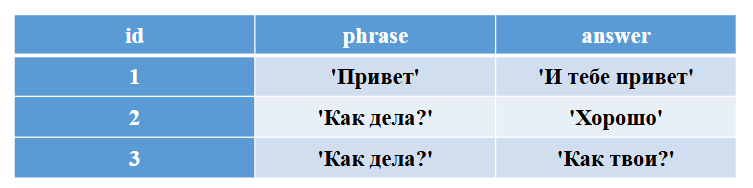
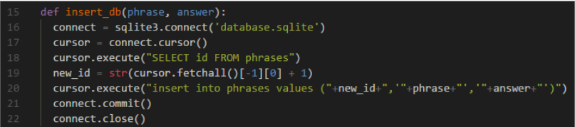
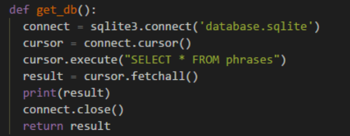
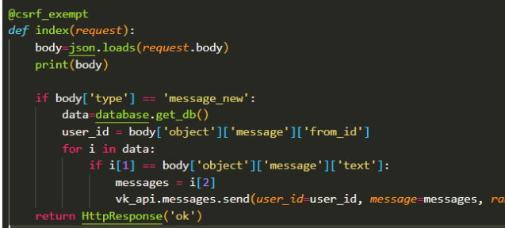
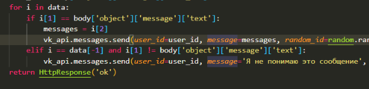

Подключение базы данных к боту
Создание таблицы для бота
1. В папке нашего сервера (где хранится файл manage.py) создать новый файл python под названием database.py, импортировать в него библиотеку sqlite и написать код, который создает новую базу данных с именем database.sqlite создает в ней таблицу с именем phrases с тремя полями: id integer – первичный ключ, phrase text, answer text. Запустить программу.
Скопируйте код в поле ниже:
Теперь комментируем код, который создает базу данных.
2. Добавить в БД значения в соответствии с таблицей

Скопируйте код в поле ниже:
Комментируем код
3. Сделать запрос к таблице и вывести все записи в командную строку.
Скопируйте код в поле ниже:
Комментируем код
4. Создаем функцию для добавления значений в БД

5. Создаем функцию для получения значений из БД

6. Импортируем файл database.py в файл views.py import database. Меняем функцию index, теперь бот в ответ на наши сообщения будет писать фразы из нашей БД.

7. Реагируем на фразы, которых нет в БД. Добавляем elif, в котором проверяем, что мы проверили все записи из БД и не нашли ни одной подходящей

8. Техническое задание: дать возможность пользователю пополнять нашу БД. Пользователь будет писать сообщения в формате: "Фраза пользователя/Ответ бота", и мы должны сохранить фразы в БД.
8.1. Найдите способ проверить наличие символа "/" в строке в Python
8.2 Напишите условие, если в сообщение пользователя содержится символ "/", вывести в консоль (print) фразу "В сообщении /".
8.3 Теперь нужно раздеить сообщение (split) по символу /, и вывести в консоль два сообщения, первое - фраза до /, второе - фраза после /
8.4 Разберитесь как работает функция insert_db из файла database.py, чтобы ее использовать в файле views.py нужно написать database.insert_db(...).
8.5 Используя эту функцию добавить в БД фразы, переданные пользователем.
8.6 После добавления фраз, отправьте пользователю сообщение о том, что фраза сохранена